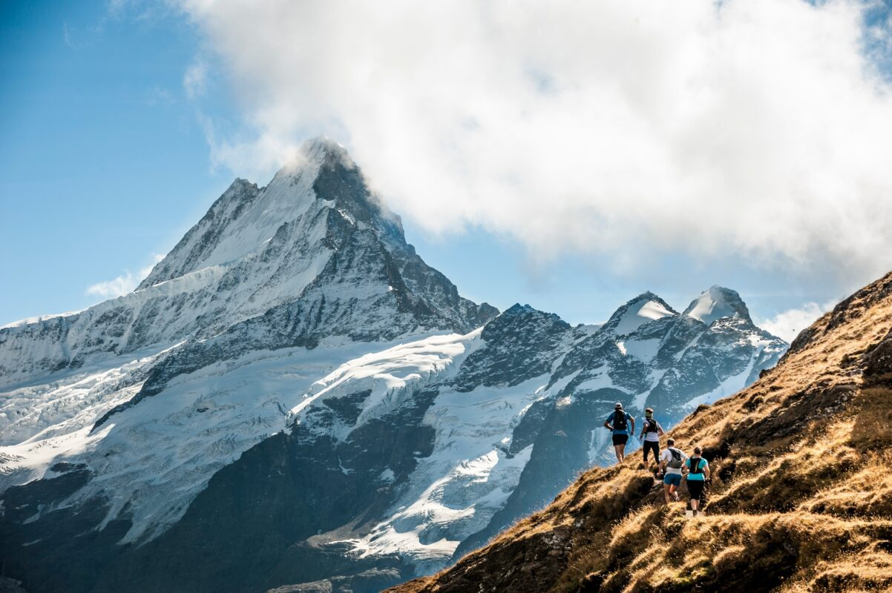
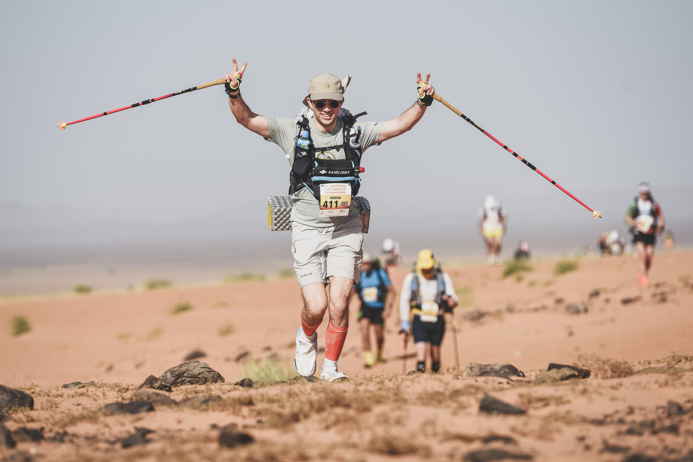
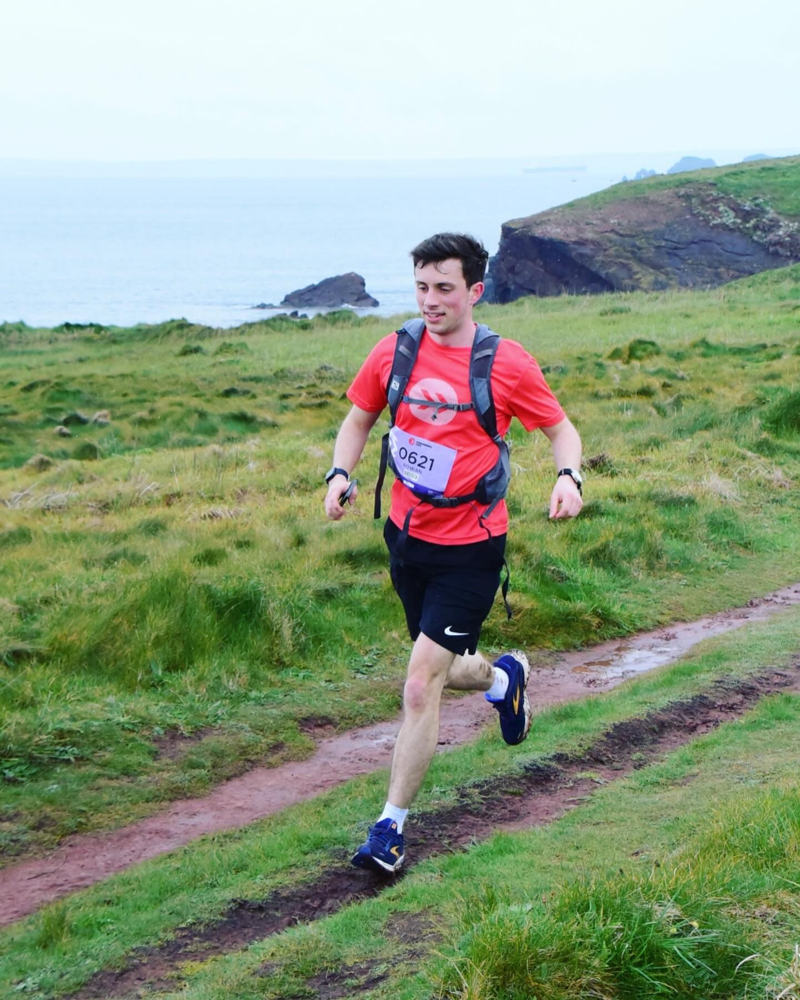

How it started
My first ultra — and the furthest I'd run past 10km at school — was the Eiger E51, entered with a friend to settle a lost bet. Being 18 and the youngest in the race was exhilarating, and I discovered that while I'm not much of a fan of running culture, I love being in the mountains and meeting people with incredible stories.

Marathon des Sables
250km, fully self-supported, over six days across the Sahara — every bit of kit, food and toiletries carried on my back, with water provided every 10km. The slightly manic, elated look of someone who's just finished it is hard to fake.

Endurance Life — Pembrokeshire
A beautiful 56km race along the coastline of south-west Wales, and — 3rd place — probably my first, and last, podium finish.